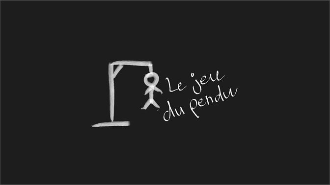

Regle des jeux
Jeu de dé
Le jeu comprend 2 joueurs sur un seul et même écran. Chaque joueur possède un score temporaire (ROUND) et un score global (GLOBAL).
À chaque tour, le joueur a son ROUND initialisé à 0 et peut lancer un dé autant de fois qu'il le souhaite.
Le résultat d’un lancer est ajouté au ROUND.
Lors de son tour, le joueur peut décider à tout moment de: Cliquer sur l’option “Hold”, qui permet d’envoyer les points du ROUND vers le GLOBAL. Ce sera alors le tour de l’autre joueur.
Lancer le dé. S’il obtient un 1, son score ROUND est perdu et c’est la fin de son tour.
Le premier joueur qui atteint les 100 points sur global gagne le jeu.
Jeu du morpion
Le jeu se joue à deux joueurs, chacun utilisant un symbole différent (par exemple, "X" et "O"). La grille de jeu est initialement vide.Les joueurs jouent à tour de rôle en plaçant leur symbole sur une case vide de la grille.
Le premier joueur commence en plaçant son symbole sur n'importe quelle case de la grille.
Les joueurs alternent ensuite leurs tours en plaçant leur symbole sur une case vide non encore jouée.
Le jeu se poursuit jusqu'à ce qu'un joueur aligne trois de ses symboles horizontalement, verticalement ou en diagonale, ou que toutes les cases de la grille soient remplies sans qu'aucun joueur n'ait réussi à aligner trois symboles.
Si l'un des joueurs parvient à aligner trois de ses symboles, il remporte la partie.
Si toutes les cases de la grille sont remplies sans alignement de trois symboles, la partie est déclarée nulle ou se termine par un match nul. Après la fin de la partie, les joueurs peuvent décider de rejouer une nouvelle partie.Le premier joueur qui atteint les 100 points sur global gagne le jeu.

Jeu du morpion
Un mot secret aleatoire est choisie et un nombre de tirets représentant le nombre de lettres dans le mot sur une feuille de papier (par exemple, "_ _ _ _ _" pour un mot de cinq lettres).
Le joueur commence à deviner des lettres qui pourraient figurer dans le mot.
Si la lettre proposée est présente dans le mot, elle est placée à toutes les positions appropriées dans le mot secret. Par exemple, si le mot secret est "PENDU" et que le joueur propose la lettre "E", le mot secret deviendrait "_ E _ _ _".
Si la lettre proposée n'est pas présente dans le mot, on ajoute une partie du dessin d'un bonhomme pendu (généralement une potence et une corde). Le joueur continue à deviner des lettres jusqu'à ce qu'il devine correctement le mot ou jusqu'à ce que le dessin du bonhomme pendu soit complet.
Si le joueur devine correctement le mot avant que le dessin du bonhomme pendu ne soit complet, il remporte la partie. Sinon, il a perdu.
Après la fin de la partie, les joueurs peuvent décider de jouer à nouveau en choisissant de nouveaux mots aléatoire.
